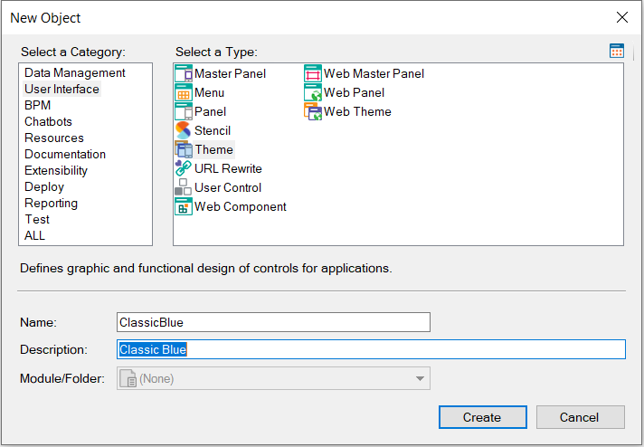
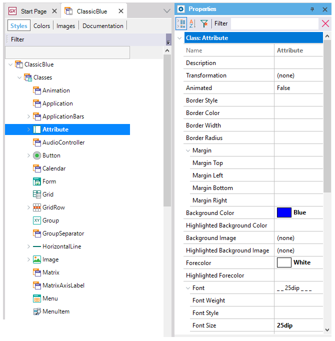
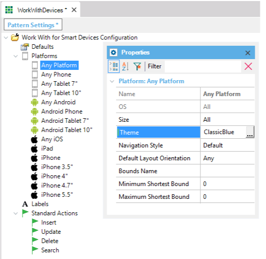

My first Theme object
To create a Theme object, select the New > Object option as you would do to create any other object. From this window, select the Theme object assign it a name (i.e. ClassicBlue), and press the Create button.  Customizing a theme-classNext, the Themes editor is opened. Suppose you need to apply the blue color to the background of all Attributes, and the font size to 25 and the font forecolor is white. So, change the following properties of class Attribute:
 Applying the ThemeNow you can access the WorkWith pattern instance. To do so, open the Preferences tab, and under Patterns, open Work With for Smart Devices. Select the "Any platform" icon and in the Theme property select the ClassicBlue theme, as shown in the image below.  In this way, all the platforms included in the list shown in the image will take the selected theme. However, each one of these platforms has its own Theme property. Applying the Class Attribute in LayoutNow let see how to apply the designed class to the attributes. Open the layout of the Work With Devices, select List node, select the attribute(s) that want to apply the class, and set the Class property with Attribute value (the theme-class customized). By default, for attributes use the Attribute Class, but if you design another Attribute-class, since this property is where you can use it.
Runtime resultThen just execute and see the changes. See alsoVideos |

| Backlinks |
| Navigation Style property |
| Category:Theme object |